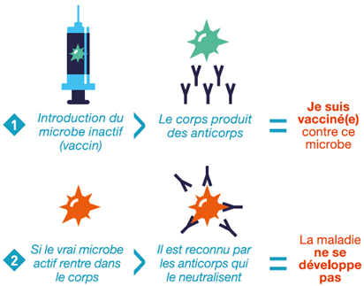

Découvrez l'incroyable histoire d'une invention qui a révolutioné notre monde !
Le vaccin
Pourquoi et comment, le vaccin est une innovation qui a réussi à devenir incontournable aujourd’hui ? Alors que ce sujet est au cœur de nombreux débats en ce moment, ce sujet « piquant » a sauvé des millions de vies depuis sa création. Le but de l’article n’est pas de faire de la « pub » pour la vaccination, mais bel et bien de montrer l’histoire de cette invention qui a su évoluer au travers des siècles.
Tout d’abord, il est intéressant de se poser la question, d’où vient le terme « vaccin » et quelle est son origine ?
Très tôt dans l’histoire, vers l’antiquité, des médecins et savants avaient remarqué que des personnes qui avaient contracté des maladies et qui en avaient survécu, avaient peu de chance de la recontracter. La notion « d’immunité » est alors apparue. Quelques siècles plus tard, le scientifique et médecin anglais Edward Jenner a fait une observation surprenante. L’épidémie de variole, une maladie hautement contagieuse, qui cause dans la majorité des cas de la fièvre ou encore des éruptions cutanées, cause des dizaines de milliers de morts en Europe tous les ans jusqu’à la fin du XVIIIe siècle. Presque 1 malade sur 5 contractait une forme très grave et en décédait, ce qui est, à titre de comparaison, plus de 8 fois supérieur au taux de mortalité de la Covid-19 actuellement. Cependant, une catégorie d’individus spécifique semble immunisée à cette maladie : les trayeuses, des fermières qui s’occupent principalement de la traite des vaches. Pourquoi semblent-elles immunisées à la variole sans ne l’avoir jamais contractée ? Il faut savoir que la variole n’a pas touché uniquement les humains, elle pouvait être également présente chez les animaux, notamment les vaches. La variole chez les bovins, aussi appelée « vaccine », causait principalement des éruptions cutanées sur les pis des vaches. Cette forme de variole pouvait être transmise chez les hommes sous une forme bénigne par contact (et qui est plus proche des pies des vaches que les trayeuses ?). L’idée d’injecter ce virus présent chez les vaches aux humains lui est apparue. À la suite de quelques tests, les « cobayes » ont eu la maladie avec seulement un peu de fièvre et étaient immunisés à celle-ci par la suite. On peut également noter que le nom « vaccin » vient donc du mot « vaccine » du latin « vacca » signifiant ‘vache’. Edward Jenner a donc, grâce à son idée, partie d’une simple intuition, permit d’inventer le principe de vaccination. Cette technique permet de se protéger contre des formes sévères d’une certaine maladie en inoculant au préalable cette même maladie (virus) atténuée. Grâce à cette invention, des dizaines de milliers de morts ont pu être évités chaque année. L’OMS a déclaré en 1980 que « la variole est la première maladie officiellement éradiquée de la planète » grâce à la vaccination.
Principe du vaccin, comment fonctionne exactement la vaccination ? Comment cette petite piqûre, « presque » indolore, peut-elle sauver des millions de vie ? Si on doit rapidement vulgariser, le système immunitaire détecte la présence de composants étrangers à l’organisme que l’on appelle antigènes, ici la maladie atténuée qui a été injectée auparavant. Notre système de défense apparente ces antigènes comme intrus malveillants et cherche donc à les éliminer. Pour ce faire, il y aura donc la fabrication d’anticorps. Ces mêmes défenses sont gardées en ‘mémoire’ par l'organisme et permettent de se défendre contre la maladie sous sa vraie forme. On appelle cela le principe de « mémoire immunitaire ».

Il existe différentes technologies pour le vaccin. Le vaccin le plus commun est celui où l’on
injecte dans l’organisme un virus atténué ou neutralisé. Celui-ci permet d’apprendre à créer des
anticorps adéquates pour l’éliminer. Ce type de vaccin n’est pas le seul existant. Dans les évolutions
qui peuvent être observées au niveau des vaccins, c’est le type de méthode utilisé qui peut être
souligné en premier. Injecter un virus inoffensif apporte souvent une forte et longue réponse
immunitaire, puisque le virus est encore vivant lorsqu’il est injecté. Cependant, il ne peut pas être
utilisé pour tous les types de vaccins. Non seulement parce que certaines maladies sont bien plus
dangereuses que d’autres et qu’il existe des personnes avec moins de défenses immunitaires, tels que les
personnages âgés ou celles souffrant de maladie auto-immune. Celles-ci pourraient ne pas réussir à se
défendre correctement face au vaccin qui était censé les protéger ...
Les scientifiques ont alors développés les vaccins dit « sous-unitaires ». L’idée ici est de reproduire uniquement une partie du virus en laboratoire tel que sa protéine virale ou ses spicules. Des anticorps sont créés afin d’éliminer ces antigènes et apportent donc également une protection face au « vrai virus ». Cependant, bien que ce type de vaccin soit plus sûr, la réponse immunitaire peut être plus faible, il faut donc généralement ajouter des adjuvants à celui-ci. Les adjuvants sont des agents immunologiques qui améliorent la réponse immunitaire d'un vaccin et minimisant aussi la dose d'antigène nécessaire. Mais ils font beaucoup débats sur leur potentiel effet néfaste pour la santé.
Un autre type de vaccin, qui a fait parler de lui dernièrement, est le vaccin ADN/ARN. Il a été autorisé pour la première fois avec le vaccin contre la Covid-19 (le vaccin élaboré par l’entreprise Pfizer). Ce type de vaccin est une véritable révolution, car il change de tout ce qui a été fait jusqu’à présent. En effet, on injecte cette fois « l’ARN messager », qui est l’instruction génétique présente au sein d’un virus. Celle-ci permet d’ordonner la production des spicules, la protéine présente à la surface (souvent représentée par des pics sur les dessins). Lorsque cette information génétique est injectée, les cellules humaines vont alors la lire et commencer à produire les spicules, les mêmes que celles du virus. Le système immunitaire va réagir à ces antigènes et produire des anticorps qui seront par la suite capables de reconnaître les protéines du véritable virus. Comme pour les protéines virales et contrairement au virus inactivé, les molécules en circulations ne correspondent qu’à une partie du virus et ne seraient pas pathogènes pour le corps humain. Cette technique permet également d’accélérer la production du vaccin. Mais, car il faut bien un mais, ce vaccin nécessite des conditions logistiques complexes (conservation à très basses températures). La manipulation du matériel génétique présent dans le vaccin doit être faite avec beaucoup de précautions et il est encore en phase d’étude. On ne sait pas réellement combien de temps durera la mémoire immunitaire acquise avec ce vaccin. Dans le même type de famille que l'ARN messager utilisant le génie génétique, on peut retrouver un autre type : les vaccins à vecteurs viraux. Ceux-ci ont une grande différence avec le vaccin présenté juste avant, le matériel génétique à l’origine des spicules n’est pas transmis directement, mais via un autre virus. C’est donc ce virus qui va développer les spicules du virus « cible » du vaccin. La réponse immunitaire sera plus forte, mais comme pour certains vaccins avec un virus atténué, il peut engendrer de la fièvre, puisque le corps devra se défendre et produire des anticorps. Ce type de vaccin peut être retrouvé avec le vaccin contre la Covid-19 de l’entreprise Astrazeneca.
En bref, on peut voir que le vaccin a su évoluer au cours des années. Il existe d’autres techniques en plus de celles citées et d’autres sont encore à l’étude et pourront, on l’espère, nous réserver de belles découvertes dans les années à venir.
Quelques chiffres sur les chiffres du vaccin. Si l’on regarde les chiffres du vaccin, on remarque très rapidement que cette invention a véritablement révolutionné notre société, en augmentant drastiquement notre espérance de vie et en diminuant la mortalité infantile. D’après l’UNICEF, la vaccination sauve chaque année environ 2 à 3 millions d’enfants dans le monde. De plus, on estime à 17,1 millions le nombre de vies sauvées uniquement par la vaccination contre la rougeole depuis 2000 d’après l’OMS.
On peut néanmoins déplorer que tous les pays ne soient pas logés à la même enseigne. Bien que le vaccin soit une invention qui ne date pas d’hier, on estime que dans les pays défavorisés, selon l’OMS, c’est encore 1,5 millions d’enfants qui meurent encore chaque année de maladies qui peuvent être évitées par la vaccination. Des chiffres alarmants, avec parfois des épidémies qui refont surface dans ces pays tel que la rougeole. Les chiffres baissent au fur et à mesure des années, mais à quand un accès au vaccin pour tous dans le monde ?
Pourquoi existe-il malgré tout aujourd’hui, une hésitation à se faire vacciner ? Au XXIe siècle, comme toute invention qui se respecte, il y a de nombreuses spéculations sur celle-ci et le vaccin n’échappe pas à la règle. Cela peut paraître bizarre dans un monde ou le vaccin a prouvé, depuis sa création, qu’il permettait de sauver d’innombrables vies. Pourtant, nombreux sont ceux qui refusent les nouveaux vaccins et qui spéculent sur de nombreuses théories complotistes. Dans les plus célèbres, on a la fameuse théorie où le vaccin pourrait rendre autiste. Cette théorie a été lancée par l’ancien chirurgien Andrew Wakefield (aujourd’hui radié de la profession pour ses nombreuses affirmations sans fondement), reliant les vaccins à l'autisme. Pour information, celui-ci a été soupçonné de conflit d'intérêt financier, car il a été rémunéré par un cabinet d’avocats mandatés par des parents d’enfants autistes afin de faire un recours contre un fabricant de vaccins. D’autres informations ont été diffusée tel qu’un arrangement entre le ministère de la santé et les entreprises pharmaceutiques, les puces de traçages mis dans les vaccins pour nous pister (alors qu’il suffit de regarder dans la poche de son jean pour remarquer que notre smartphone contient une puce GPS …) ou bien, que les vaccins contiendraient des nanoparticules afin de nous utiliser comme antenne 5G …
Il est important de parler de cette partie sur les théories "complotistes" lorsque l’on parle de l’invention du vaccin, car pour que la vaccination soit efficace en temps d’épidémie, comme l’on traverse en ce moment, il faut une condition primordiale : une couverture vaccinale importante. C’est-à-dire, une grande proportion de personnes vaccinées sur une population donnée afin de bloquer la chaîne de transmission d’un virus. Les mauvaises images que véhiculent ces différentes théories non fondées nuisent à l’image de la vaccination et rendent les gens réticents sur le fait de se faire vacciner. Ces théories sont des freins à cette invention. Nous avons évidemment le droit de refuser la vaccination pour des raisons personnelles. Il est également normal, cela fait partie de la nature humaine, de douter de ce que l’on ne connaît pas vraiment. Il faut cependant faire très attention à la désinformation et aux fake-news qui peuvent être propagées. En d’autres termes, ne pas vouloir se faire vacciner est un choix libre à chacun, cet article n’est pas là vous dire quoi faire. Il faut cependant prendre sa décision en sachant démêler le vrai du faux.
Sitographie : Vidéo YouTube humoristique sur le principe du vaccin (Arte) Vidéo YouTube sur le vaccin en général (présenté par Dr Nozman) Site du gouvernement sur les 11 vaccins obligatoires Vidéo YouTube sur l’étymologie et l’origine du vaccin (présenté par Jamy Gourmaud) Site du gouvernement sur le fonctionnement de la vaccination Initiation à la virologie et de la structure de la particule virale (UCLouvain) Vidéo Youtube de France24 sur le fonctionnement des vaccins Vidéo YouTube du fonctionnement du vaccin (présenté par Jamy Gourmaud) Site info service sur le fonctionnement de la vaccination Chiffres d’enfants sauvés par la vaccination (UNICEF) Vies sauvées par la vaccination (OMS) Vaccin et complotisme (le quotidien du médecin) Information sur les différentes technologies de vaccin (industrie pharma)